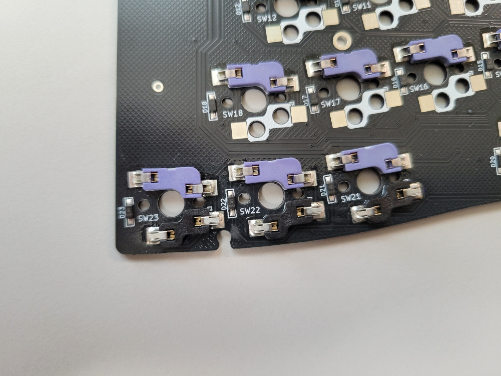
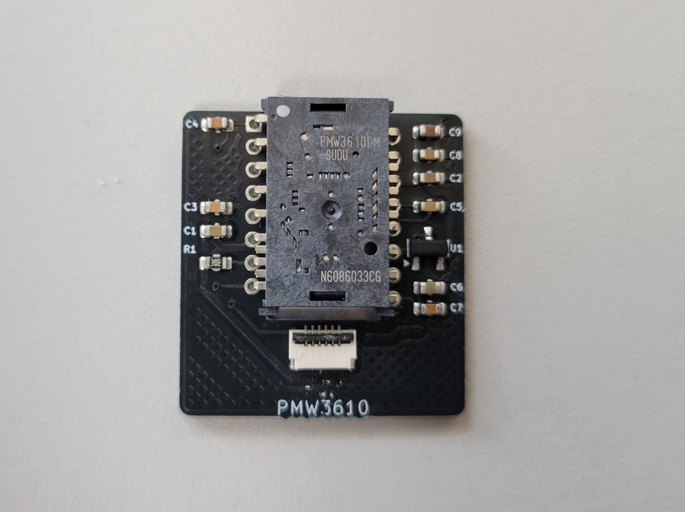
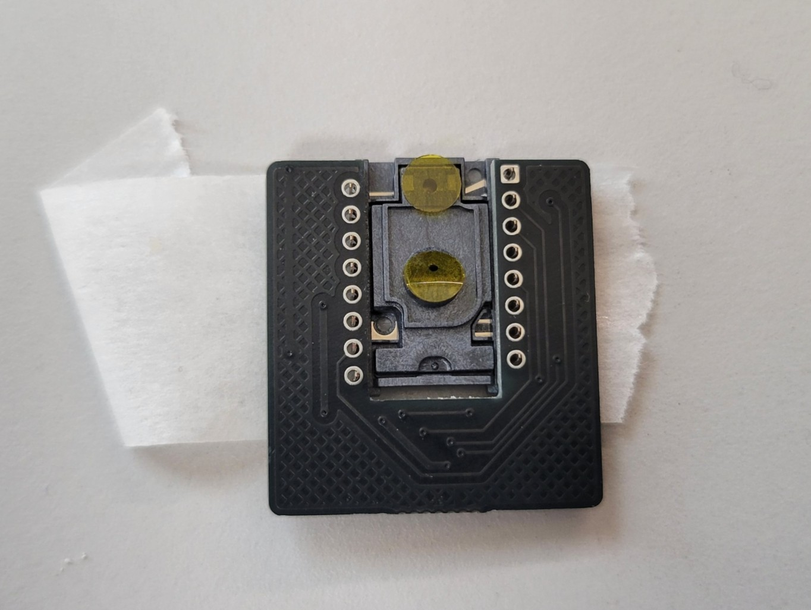
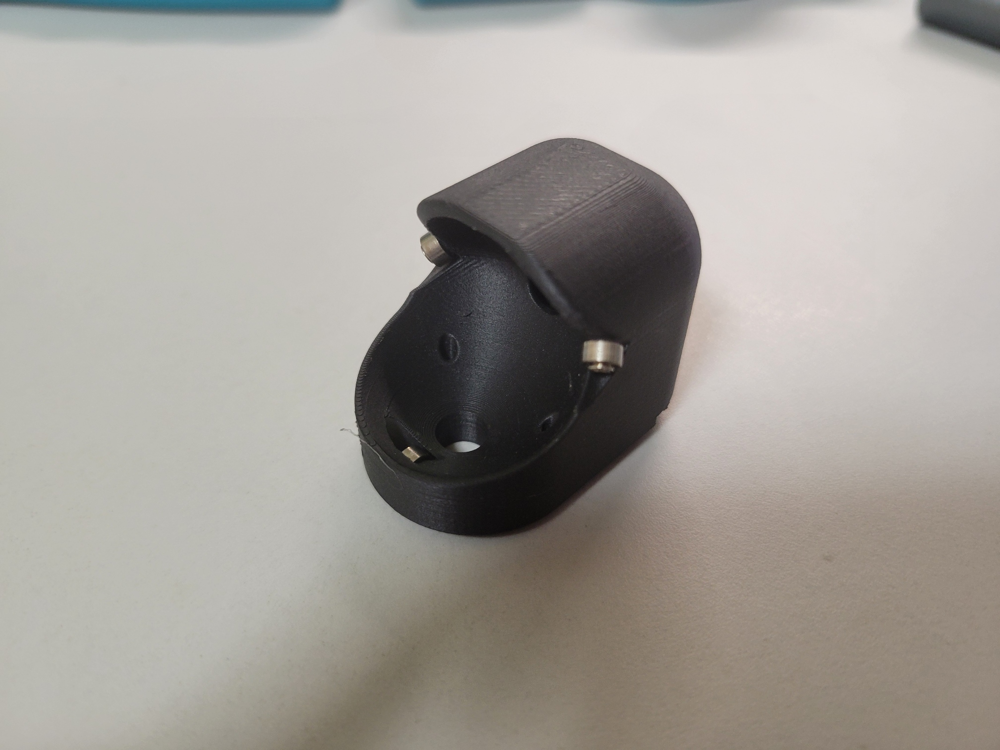
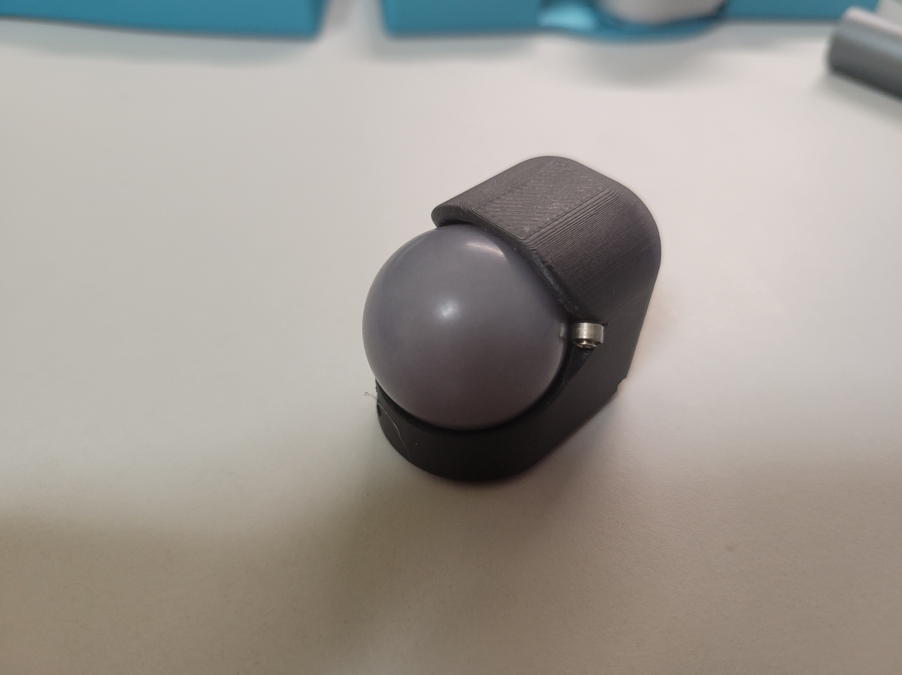
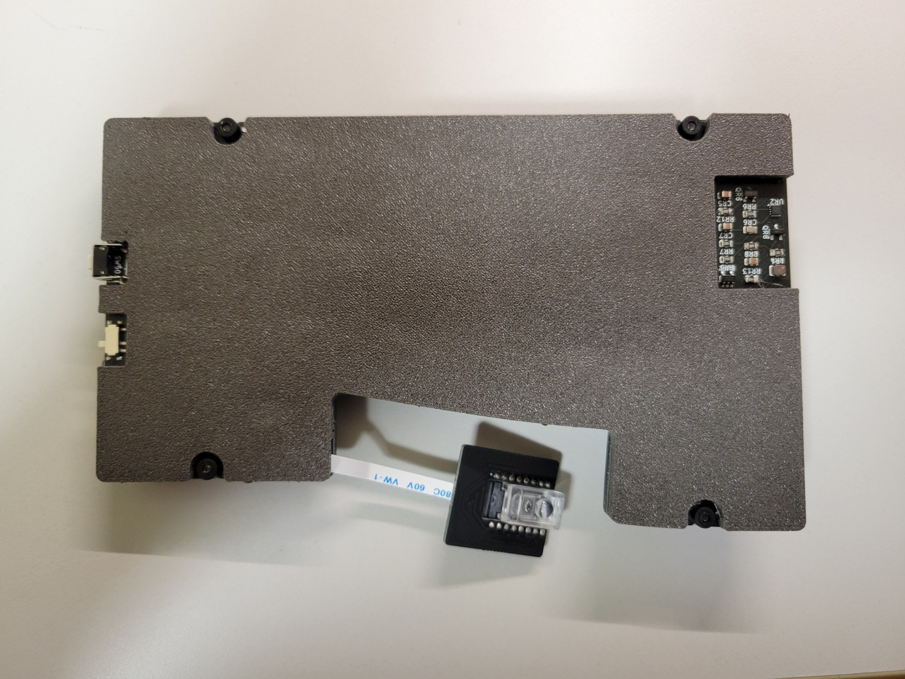

Soa44 について
Soa44は44キーの分割型キーボードで、右手親指部分に25mmトラックボールを搭載した無線キーボードです。Grin配列を採用し、ゴムブッシュを使用した簡易ガスケットマウント構造になっています。
44キー
分割型
25mmトラックボール
無線
Grin配列
ガスケットマウント

組み立てを始める前に
組み立てを開始する前に、以下の重要な注意事項を必ずお読みください。
⚠️ はんだ付け時の重要な注意事項
はんだ付けをする際には必ず電池を外してから行ってください。
電池が入ったままの状態でのはんだ付けは危険です。
はんだ付けをする際には必ず電池を外してから行ってください。
電池が入ったままの状態でのはんだ付けは危険です。
⚠️ 難易度の高い部品について
XIAOとPMW3610センサーのはんだ付けはとても難しいです。
細かいピッチでの作業となるため、十分に注意して作業してください。
不安な場合は経験者に相談することをお勧めします。
XIAOとPMW3610センサーのはんだ付けはとても難しいです。
細かいピッチでの作業となるため、十分に注意して作業してください。
不安な場合は経験者に相談することをお勧めします。
作業前のチェックリスト
- ✅ 必要な部品と工具が揃っている
- ✅ 作業スペースが十分に確保されている
- ✅ 換気の良い場所で作業する
- ✅ 静電気対策を行っている
- ✅ はんだごての温度設定を確認している
目次
ステップ 1: 必要な部品の確認
キット付属品
- PCB（左右各1枚、計2枚）
- ケース（上下カバー、左右各1セット）
- 25mmトラックボール（1個）
- PMW3610センサー（1個）
- 電池ホルダー（2個）
- ゴムブッシュ
- ネジ類
別途用意が必要な部品
- XIAO nRF52840 Plus（2個）
- 単三電池（2個）
- Chocスイッチ（44個）
- キーキャップ（44個）
必要な工具
- はんだごて（温度調節機能付き推奨）
- はんだ（0.6mm程度）
- フラックス
- はんだ吸い取り線
- プラスドライバー（細い物）
- USB-Cケーブル
- ピンセット
ステップ 2: Chocソケットのはんだ付け

Chocソケットを左右のPCBにはんだ付けします。
キットに付属するchocソケットは、親指キーの5キー分のみです。
すべてロープロ化するには別途Chocソケットを用意してください。
すべてロープロ化するには別途Chocソケットを用意してください。
- 白のシルクに沿ってソケットを載せる
- ソケットがPCBにしっかりはまっていることを確認
- ソケットの端子をはんだ付け
ステップ 3: XIAO nRF52840 Plusの取り付け


各PCBにXIAO nRF52840 Plusをはんだ付けします。
XIAO nRF52840 Plusのはんだ付けはとても難しいです。
先の細いはんだごてを使用し、隣のランドとブリッジしないよう注意してください。
先の細いはんだごてを使用し、隣のランドとブリッジしないよう注意してください。
- 左右のPCBの表側にXIAO nRF52840 Plusを配置
- ピンヘッダを写真のようにさし、位置を決める
- ピンヘッダをさしていない側の端子をはんだ付け
- ピンヘッダを外し、反対側の端子をはんだ付け
- 裏側の端子をはんだ付け
ステップ 4: 電池ホルダーの取り付け


各PCBに電池ホルダーをはんだ付けします。
電池の極性を間違えないよう、電池ホルダーの+/-表示を確認してください。
- 電池ホルダーを左右のPCBの表側に配置
- マスキングテープで仮固定
- 裏面から電池ホルダーの端子をはんだ付け
- はんだ付け後、飛び出している足をニッパーでカット
ステップ 5: PMW3610センサー（トラックボール）の取り付け




右手側PCBにPMW3610センサーを取り付けます。
センサーは精密部品です。はんだ付け時に過度な熱を加えないよう注意してください。
- センサー基板をセンサー基板に配置(向きは写真を確認)
- 浮きがないようにマスキングテープで仮固定
- センサー基板の各端子をはんだ付け
- センサーの保護シールをはがす
ステップ 6: ファームウェアの書き込み
ZMKファームウェアをXIAO nRF52840 Plusに書き込みます。
キーマップの変更にはGitHubアカウントが必要です。
詳しい手順は下記の動画が参考になります。
詳しい手順は下記の動画が参考になります。

↑ クリックして動画を視聴
- ZMKリポジトリをフォークする
- KeymapEditorでキーマップを変更し保存する
- ビルドが完了したらファームウェアをダウンロード
- 左のXiaoにUSB接続、リセットボタンを2回素早く押してブートローダーモードに入る
- settings_reset-seeeduino_xiao_ble-zmk.uf2を書き込み
- 右にも同様にsettings_reset-seeeduino_xiao_ble-zmk.uf2を書き込み
- 左にsoa44_L rgbled_adapter-seeeduino_xiao_ble-zmk.uf2を書き込み
- 右にsoa44_R rgbled_adapter-seeeduino_xiao_ble-zmk.uf2を書き込み
左右のペアリング後は、settings_reset-seeeduino_xiao_ble-zmk.uf2の書き込みは不要です。
ステップ 7: センサー基板の接続

PMW3610センサー基板とメインPCBをFFCケーブルで接続します。
FFCケーブルは繊細な部品です。
無理に力を加えると破損する可能性がありますので、慎重に作業してください。
無理に力を加えると破損する可能性がありますので、慎重に作業してください。
- メインPCBのFFCコネクタのフラップを上に持ち上げる
- FFCケーブルをコネクタに挿入する（端子面を確認して正しい向きで）
- ケーブルが奥までしっかりと差し込まれていることを確認
- ケーブルが曲がっていないか、まっすぐ挿入されているかを確認
- フラップをしっかりと下げてケーブルを固定
- センサー基板側も同様にFFCケーブルを接続
- センサー基板側のFFCケーブルを写真のように90度に折り曲げる(ケーブルでセンサーが浮かないように)
ステップ 8: 動作テスト
組み立てたキーボードの動作を確認します。
- 単三電池を電池ホルダーに挿入
- 左右のキーボードのスライドスイッチを奥側にして電源を入れる
- 左右のResetスイッチを同時に一度押す(これで左右のペアリングが完了)
- パソコンとBluetooth接続
- ピンセットでソケットを導通させて、全てのキーが正常に入力できることを確認
- トラックボールが正常に動作することを確認
動作しないキーがある場合は、はんだ付けを再確認してください。
ステップ 9: トラックボールケースの組み立て


トラックボールケースを組み立てます。
ネジを締め付けすぎるとねじ穴がゆるゆるになって固定できなくなってしまうので、泊るところまで締めたらそこでやめましょう。
- ベアリングをトラックボールケースに取り付け
- トラックボールをはめて正常に動作することを確認
ステップ 10: スイッチの取り付け
ファームウェアの書き込みと動作テストが完了したら、スイッチを取り付けます。
スイッチを取り付ける前に、必ずファームウェアの動作確認を行ってください。
- Form_sheetをpcbに敷く
- Form_middleをpcbに敷く
- その上にスイッチプレートを載せてスイッチをはめる
- 再度、全てのキーの動作をテスト
ステップ 11: ケースの組み立て

最後にケースを組み立てて完成です。
- PCBにゴムブッシュを取り付け
- ゴムブッシュ内にネジを入れる
- Form_bottomをpcb裏側にはめる
- ネジでケースにPCBを固定
- ネジでケースを固定
- トラックボールが正常に回転することを最終確認
完成！

お疲れさまでした！
トラブルシューティング
よくある問題と解決法
キーが反応しない
→ スイッチの足が折れていないか。はんだ付けを忘れていないかを再確認。
→ スイッチの足が折れていないか。はんだ付けを忘れていないかを再確認。
トラックボールが動かない
→ センサーのはんだ付けとトラックボールの配置を確認
→ センサーのはんだ付けとトラックボールの配置を確認
Bluetooth接続できない
→ ファームウェアの書き込みを再度実行。
→ ファームウェアの書き込みを再度実行。
ペアリングが途切れる
→ 下記の動画を確認してください。
→ 下記の動画を確認してください。

↑ クリックして動画を視聴